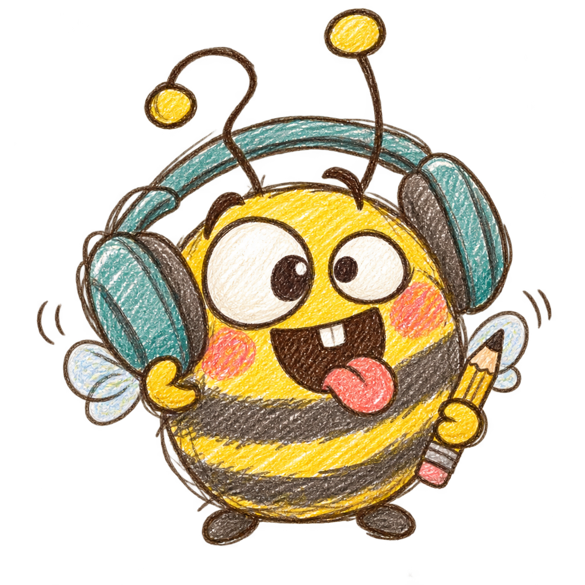
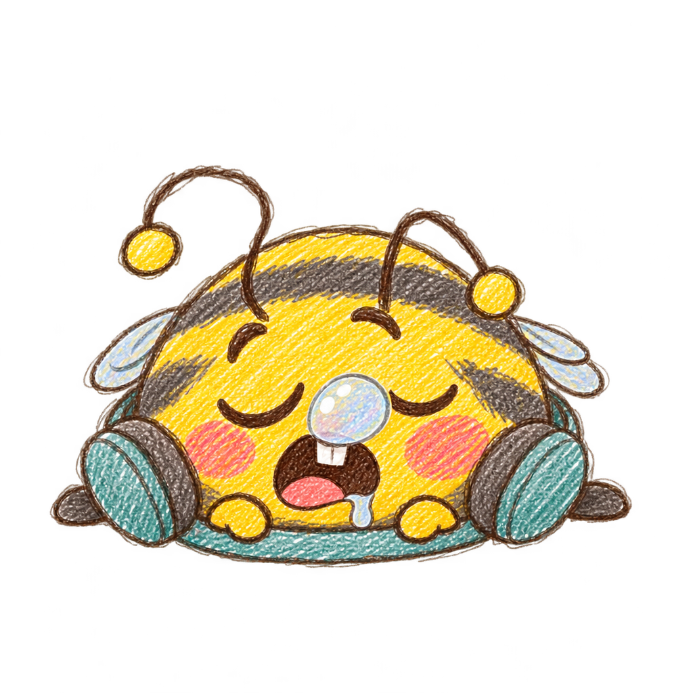

软木板上摊一本横线笔记本，左边彩色索引贴当栏目；选项不再是灰底分段控件，而是写在纸上的几个词，选中的用红铅笔圈起来；开关是手画方框打勾；按钮是纸面小方块。
软木板上钉一页横线纸，四个步骤是纸上方的索引贴（做完的变绿）；示例会议画成一张黄色便签上手画的「视频会议」；右边拍立得里的菲比随步骤换样子，下面一张索引卡写这一步要做的事。

素纸：不画横线、不歪；菲比小头像 + 状态一句话；「开始听」是牛皮纸标签；三种显示方式画成三张小卡，选中的那张是实线白卡、微微歪；底部三个入口是带虚线的字。

浮在会议上，只换颜色和字体：不透明素纸、不画横线、不歪、不放菲比；标签页是一道墨线下划线；待办只留粉色底；底部实时字幕条保持深色，最清楚。